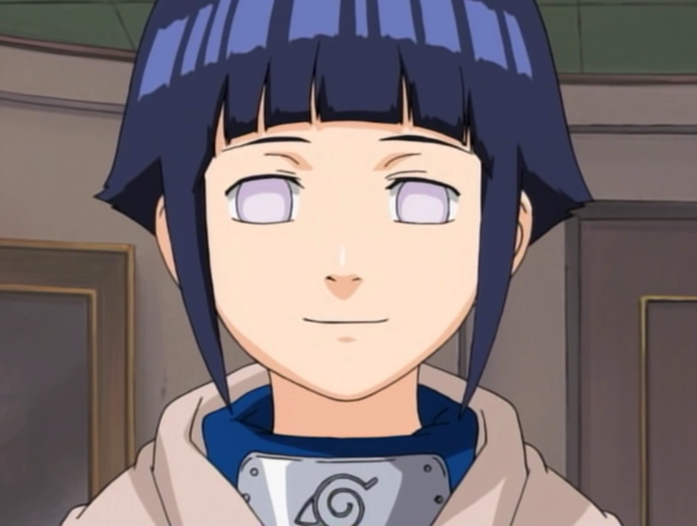

HISTÒRIA D'EN NEJI
Des de molt jove, Neji va ser considerat com un geni natural.El seu pare va arribar a dir que el potencial de les seves habilitats superaven de lluny el de qualsevol membre del Clan Hyūga, i fins i tot el seu oncle li va comentar que tots els membres del Clan, ell havia estat beneït amb la línia de sang més forta de totes. A la Part I, va ser conegut com el novell número u de la seva classe i fins i tot la seva companya Tenten deia que fàcilment podria convertir-se en Chunin tot i ser un Genin novell. A més, Rock Lee deia que ell era el Genin més fort que hi havia als Exàmens Chūnin a més que assegurava que era el més fort de tota Konoha. Kakashi va arribar a manifestar inquietud ja que mai va imaginar que hi hagués algú com ell als exàmens i va assegurar que ni tan sols el Sasuke d'aquell llavors tindria possibilitats contra ell.
Gaara també es va mostrar inquiet en observar lluitar algú del seu calibre. D'altra banda Sakura va declarar que era massa fort, tant que realment semblava injusta la seva força. Grans Shinobis com Kakashi Hatake o Hiruzen Sarutobi van admetre que era normal considerar-ho un geni. Amb el temps, Neji va ser l'únic dels 11 de Konoha que van aconseguir el rang de Chūnin i després el de Jōnin en només dos anys i mig.

HISTÒRIA DE LA HINATA
Hinata és la filla gran del líder del Clan Hyūga, Hiashi Hyūga, i com la primogènita, també és l'hereva de la casa principal del clan. Pel que sembla, va perdre aquesta posició, ja que el seu pare va considerar que la seva germana menor, Hanabi, era més capaç per tenir aquest lloc quan mori, però també va ser perquè ell va considerar que era un fracàs. Quan Hinata era jove, al seu tercer aniversari, durant la nit, és segrestada per un Shinobi de Kumogakure. El seu pare va matar el ninja del núvol i, a causa d'això, el llogaret de l'assassinat va demanar com a compensació la vida de Hiashi. Però Hizashi Hyūga, com a membre de la família secundària i germà bessó de Hiashi, va prendre el lloc del seu germà. Aquest incident va provocar que el cosí d'Hinata, Neji, tingués una mala relació amb ella.
Un dia, mentre entrenaven, Neji, va començar a colpejar durament Hinata. Aquesta última va caure molt fàcilment davant seu. Des d'aquest incident, tant el seu pare com el seu avi, van començar a dubtar de les habilitats d'Hinata, sobretot quan es va mostrar que la força i la destresa de Hanabi, germana menor d'Hinata, rivalitzava amb la de la seva germana gran, tot i ser cinc anys menor. Al final, es va decidir que les germanes s'enfrontarien en un duel, sortint vencedora Hanabi. Finalment, Hiashi col·loca com a genin Hinata i fa que Hanabi entreni durament per poder ser la líder del Clan. Ja que el seu pare va triar enfocar-se completament a la seva germana menor, Hinata, va ser deixada sota la responsabilitat de Kurenai Yūhi. A causa de totes aquestes coses i per la relació amb el seu pare, la va portar a perdre la fe en si mateixa i fins i tot sovint passava el seu temps plorant sola.